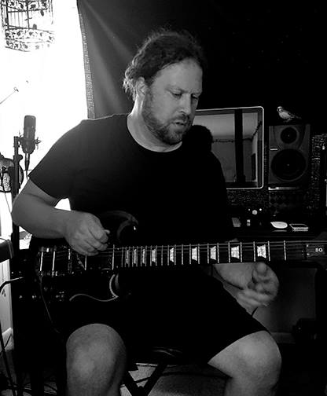
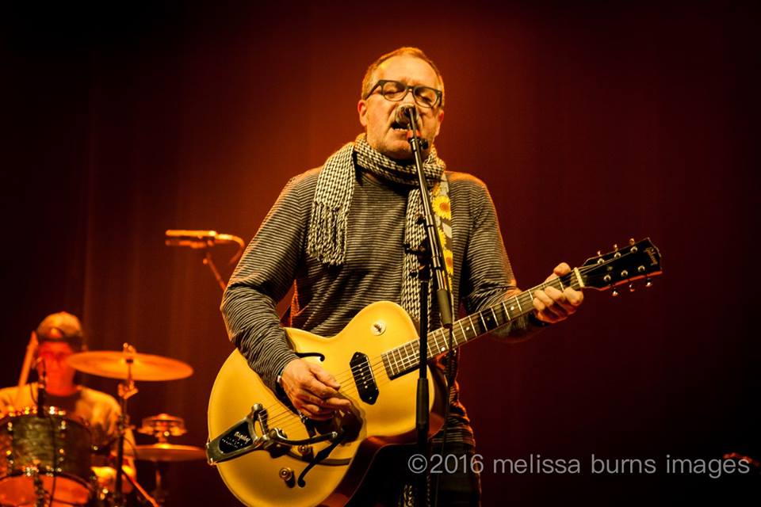
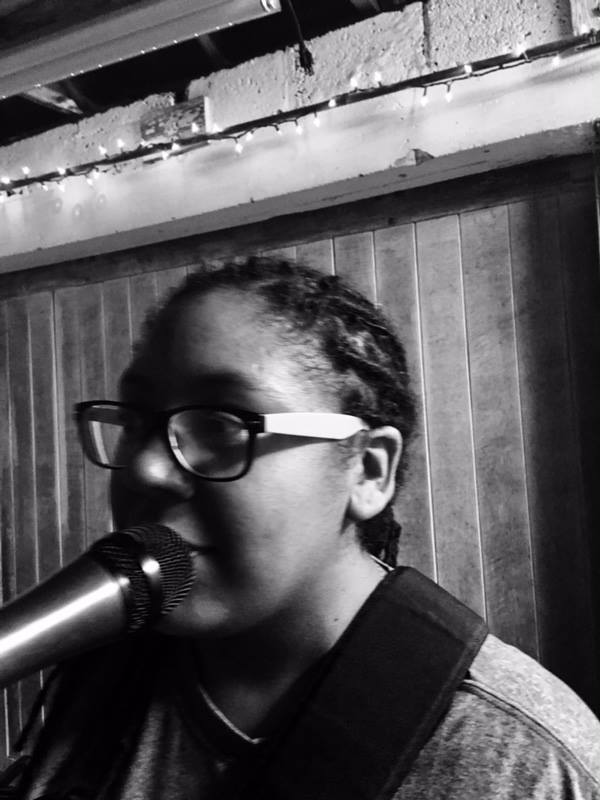

DISCOGRAPHY
Blue Ribbon is currently writing and recording an album for each of the 7 deadly sins.
We hope you follow us on social media or wherever you may roam online.
- Lust 2014
- Wrath 2015
- Envy 2016
- Pride 2017
HISTORY OF US
Chris Ambrosino

Chris Ambrosino’s life changed when he was gifted a drum kit and a guitar from his grandparents.
A working drummer while still a teen in upstate NY and a member of the first MTV generation with a
passion for Brit Pop, early metal, ‘70s NYC and later gritty Honky Tonk laced Americana from the Midwest.
By 20, Ambrosino was working the NYC club circuit building chops and becoming a multi-instrumentalist,
writer, singer and front line performer.
Jim Gordon
Virginia transplants, Chris Ambrosino (NY) and Jim Gordon (OH) can both point to pivotal events
that defined the direction their musical lives would take. For Gordon who comes from a multi-generational
musical family, it was when he first heard “Driver Eight” by REM on WMMS in Cleveland Ohio, when all that
he knew about country and blues music (Cash, Nelson, Jennings, Owens, Snow, BB King, Wolf, Waters) came into focus.
It was Southern, it was smart, it was emotional and all these years later, as he will attest, “runs through
the dozens of tunes I’ve written”.
Tricia Chapman
Northern Virginia native, Tricia Lani Chapman adds thoughtful and soulful layers to Blue Ribbon's sound
via bass guitar and vocals. Her laid back style and vintage tones are a "tip of the hat" to the great
bass players of the past. Tricia has been playing bass for over a decade and has played in worship bands as
a guitarist, bassist and a drummer, while also occasionally playing piano and clarinet! She plays and contributes
vocals to most studio tracks and all of Blue Ribbon's live shows.
Gavin Baker

Although he is the youngest member of Blue Ribbon, Gavin plays drums with the heart of an old soul. He is
currently a student at Norfolk Statue University. When he isn't spending his friday nights with us,
he is marching on the football field with his brothers in green.